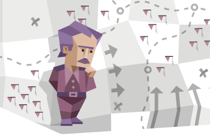
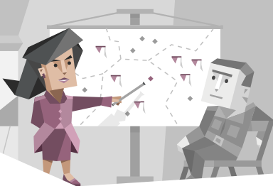
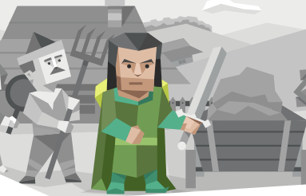
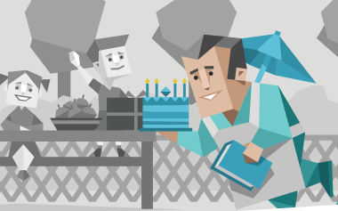
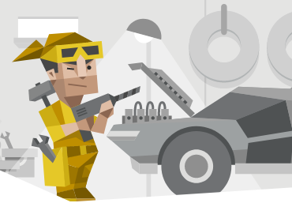
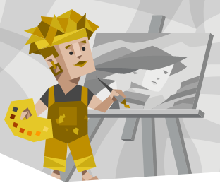
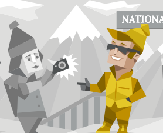

MBTI (Myers-Briggs Type Indicator) adalah psikotes yang dirancang untuk mengukur preferensi dasar murni psikologis seseorang dalam melihat dunia dan membuat keputusan. MBTI dikembangkan oleh Isabel Briggs Myers pada sejak 1940. Psikotes ini dirancang untuk mengukur kecerdasan individu, bakat, dan tipe kepribadian seseorang.
Dalam Tipe Kepribadian Manusia dalam Psikologi, Myers-Briggs mengelompokkan kepribadian manusia berdasarkan pengembangan teori Carl Jung. Yang mengemukakan dalam kepribadian seorang manusia, terdapat dua pasangan dikotomi fungsi kognitif manusia:
Fungsi Rasional : Thinking (Berpikir) dan Feeling (Merasakan).
Fungsi Irasional : Sensasi dan intuisi.
Dari dua fungsi tersebut Myers-Briggs mengembangkan teorinya dalam empat pasangan tipe indikator yang kemudian membentuk hingga 16 kepribadian manusia. Selengkapnya sebagai berikut :
Extraversion (E) – Introversion (I)
Indicator ini berbicara mengenai respon sesorang dan bagaimana orang tersebut berinteraksi di lingkungan luar mereka. Jika Ektravert menunjukkan minat pada aksi dan interaksi sosial, maka sebaliknya, Introvert menunjukkan minatnya pada pikiran, menyukai interaksi sosial yang mendalam dan lebih berenergi ketika sendiri.
(S) – Intuition (N)
Kedua indicator ini memberikan pengetahuan tentang bagaimana karakter seseorang dalam mengumpulkan informasi yang ada di luar. Mereka yang memilih sensing akan mengutamakan hal yang nyata yang bisa mereka indera langsung. Berorientasi pada fakta dan hal yang mendetail. Intuisi menunjukkan mereka lebih berorientasi pada probabilitas, memprediksikan sesuatu dan senang berpikir sesuatu yang abstrak.
Thinking (T) – Feeling (F)
Thinking dan Feeling menggambarkan bagaimana seseorang menentukan keputusan dari informasi yang mereka terima. Pemikir akan menentukan berdasarkan fakta. Mereka ini berkepribadian konsisten dan logis. Ssedangkan perasa akan mengutamakan emosi saat menentukan sesuatu.
Judging (J) – Perceiving (P)
Kedua indicator ini berbicara tentang bagaimana individu menunjukkan sikapnya kepada dunia luar. Orang tipe J akan bersikap tegas terhadap keputusannya. Sedangkan tipe P menunjukkan sikap yang lebih fleksibel.
Jika Anda tertarik dengan tipe kepribadian, silahkan ikuti tes kepribadian berikut pada halaman di bawah ini:
Tes Kepribadian MBTI
Silahkan jawab pertanyaan-pertanyaan berikut sesuai dengan gambaran diri Anda yang sebenarnya secara jujur!
Hasil Tes Kepribadian
Perhatian! Tes ini belum tentu akurat, tergantung bagaimana Anda jujur menjawab instrumen yang ada dan tentunya Anda lebih mengetahui kepribadian Anda. Berikut disajikan ulasannya:
No
Indikator
Hasil
Keterangan
1
Introvert (I)
2
Extrovert (E)
3
Intuition (N)
4
Sensing (S)
5
Thinking (T)
6
Feeling (F)
7
Judging (J)
8
Perceiving (P)
9
Hasil
16 Tipe Kepribadian Menurut MBTI
INTJ

INTJ dikenal sebagai "arsitek" merupakan pemikir yang imajinatif dan strategis dengan rencana untuk segala sesuatunya. INTJ cenderung visioner, mandiri, analitris, kritis, kompetitif, tidak terpengaruh terhadap kritik atau konflik. Profesi yang cocok adalah dibidang peneliti, ilmuwan, analis bisnis, pengacara, hakim. Saran Pengembangan yaitu Belajar mengungkapkan emosi, terbuka pada dunia luar, lebih berempati dan peka.
INTP
INTP dikenal sebagai "ahli logika" merupakan penemu yang inovatif dengan kedahagaan akan pengetahuan yang tidak ada habisnya. INTP cenderung penyendiri, tidak suka memimpin, kritis, mudah curiga, pesimis, menyukai hal ilmiah. Profesi yang cocok adalah dibidang ilmuwan, pengacara, jaksa, ahli forensik, penulis buku, programmer, ahli komputer. Saran Pengembangannya yaitu Lebih empati, rileks, focus terhadap satu ide, jangan terlalu banyak memikirkan sesuatu secara berlebihan.
ENTJ

ENTJ dikenal sebagai "komandan" merupakan pemimpin pemberani, imajinatif dan berkemauan kuat selalu menemukan cara atau menciptakan cara. ENTJ cenderung tegas, jujur, tangguh, disiplin, mendominasi, pemimpin, kemauan yang kuat, berkarisma. Profesi yang cocok adalah dibidang entrepreneur, analis bisnis, bagian keuangan, pemimpin organisasi. Saran Pengembangannya yaitu belajar mengungkapkan perasaan, menghargai orang lain, mengelola emosi, hindari sikap arogan atau meremehkan kemampuan orang lain, belajar berpikir lebih luas dengan tidak memandang banar atau salah.
ENTP
ENTP dikenal sebagai "pendebat" merupakan pemikir yang cerdas dan serius yang gatal terhadap tantangan intelektual. ENTP cenderung inovatif, fleksibel, lincah, mau belajar, cenderung melakukan hal baru yang disenangi. Profesi yang cocok adalah dibidang aktor, pengacara, fotografer. Saran Pengembanganya yaitu jangan mau menang sendiri, perhatian pada orang lain, belajar untuk bisa lebih waspada, berusaha hindari perdebatan yang kurang perlu.
INFJ
INFJ dikenal sebagai "advokat" merupakan sosok yang pendiam dan mistis, tetapi idealis yang sangat menginspirasi dan tak kenal lelah. INFJ cenderung perhatian, reflektif, perfeksionis, visioner, tekun, empati, berkomitmen dan sensitive. Profesi yang cocok adalah dibidang : psikolog, dokter, pekerja sosial, seniman. Saran Pengembangannya yaitu Berpikir seimbang dengan tidak memandang sisi negatif, Lebih rileks dan bersabar terhadap kesalahan orang lain.
INFP
INFP dikenal sebagai "mediator" merupakan sosok yang puitis, baik hati, dan altruisik selalu ingin membangu aksi kebaikan. INFP cenderung penuh perhatian, peduli, idealis, perfeksionis, win-win solution. Profesi yang cocok adalah dibidang pengajar, penulis, seniman, konselor, psikolog. Saran Pengembangannya yaitu Belajar menerima kritik, tegas, jangan menyalahkan diri.
ENFJ

ENFJ dikenal sebagai "protagonis" merupakan pemimpin yang karismatik dan menginspirasi, mampu memukai pendengarnya. ENFJ cenderung imajinatif, peka, pandai bersosialisasi, loyal, membutuhkan apresiasi. Profesi yang cocok adalah dibidang konsultan, penulis, pengajar, kordinator acara, motivator, pskikolog. Saran Pengembangannya yaitu tidak mengukur harga diri dari penilaian orang, jangan terlalu keras terhadap diri sendiri.
ENFP
ENFP dikenal sebagai "juru kampanye" merupakan seorang yang bersemangat, antusias, kreatif dan bebas bergaul yang selalu dapat menemukan alasan untuk tersenyum. ENFP cenderung optimis, ramah, imajinatif, komunikator yang baik, bisa memahami orang lain. Profesi yang cocok adalah dibidang konselor, psikolog, pengajar, presenter, seniman. Saran Pengembangan yaitu fokus, disiplin, belajar menghadapi konflik, pikirkan diri sendiri, hemat.
ISTJ
ISTJ dikenal sebagai "ahli logistik" merupakan pribadi yang praktis dan menggunakan fakta yang keandalannya tidak dapat diragukan. ISTJ cenderung bertanggungjawab, serius, damai, logis, objektif, bisa diandalkan, tekun, disiplin, pendengar yang baik, teguh dalam aturan dan prosedur tertentu. Profesi yang cocok adalah di bidang Manajemen, intelijen, hakim, pengacara, akuntan, programmer, analis. Saran pengembangan : lebih memahami kebutuhan dan perasaan orang, gunakan cara yang baik jika ada orang yang melanggar aturan, lebih terbuka pada perubahan dan bersikap positif terhadap apa yang sudah dilakukan orang lain.
ISFJ
ISFJ dikenal sebagai "pembela" merupakan pelindung yang sangat berdedikasi dan hangat selalu siap membela orang yang dicintainya. ISFJ cenderung setia, berhati-hati, stabil, serius, ramah, detail, teliti, bertanggungjawab dan bisa diandalkan. Profesi yang cocok adalah dibidang Arsitek, konselor, penjaga toko, desainer, perawat. Saran Pengembangannya yaitu Belajar untuk menolak sesuatu, jangan ragu untuk mencoba hal baru.
ESTJ
ESTJ dikenal sebagai "eksekutif" merupakan administrator istimewa yang tidak ada duanya dalam mengelola sesuatu atau orang. ESTJ cenderung praktis, disiplin, konservatif, suka berorganisasi, disiplin, fokus pada hal yang berguna bagi dirinya, sistematis. Profesi yang cocok adalah dibidang dunia militer (tentara), hakim, polisi, akuntan. Saran Pengembangannya yaitu tidak memaksa orang lain, sabar, mengontrol emosi, belajar memahami orang lain.
ESFJ

ESFJ dikenal sebagai "konsul" merupakan orang yang sangat peduli, sosial, dan populer selalu ingin membantu. ESFJ cenderung hangat, populer, teliti, santai, sederhana, rajin, mudah bekerja sama dengan orang lain. Profesi yang cocok adalah dibidang perawat, guru, perencana keuangan, bagian administrasi. Saran Pengembangannya yaitu tidak mengorbankan diri untuk kesenangan orang, tidak lari dari kritik, lebih dewasa, bisa lebih tegas dan tidak ragu untuk meminta pendapat orang lain saat akan mengambil keputusan.
ISTP

ISTP dikenal sebagai "virtuoso" merupakan eksperimenter yang pemberani dan praktis, menguasai berbagai jenis alat. ISTP cenderung pendiam, logis, objektif, cepat beradaptasi, tegas, percaya diri, problem solver. Profesi yang cocok adalah dibidang Polisi, Pilot, entrepreneur, atlit. Saran Pengembangannya yaitu lebih observatif, belaja rmengenal perasaan diri, belajar percaya..
ISFP

ISFP dikenal sebagai "petualang" merupakan seniman yang fleksibel dan mengagumkan selalu siap menjelajahi dan mengalami hal baru. ISFP cenderung artistik, sederhana, fleksibel, pelaksana yang baik, santai, menghindari konflik. Profesi yang cocok adalah dibidang seniman, pekerja sosial, psikolog. Saran pengembangan yaitu Jangan terus menghindari konflik, berpikir jangka panjang, lebih terbuka.
ESTP

ESTP dikenal sebagai "pengusaha" merupakan seorang yang cerdas, bersemangat dan sangat tanggap yang benar-benar menikmati hidup yang menantang. ESTP cenderung aktif, komunikator handal, menyukai olahraga, spontan, mudah beradaptasi. Profesi yang cocok adalah dibidang sales, marketing, pialang saham, entrepreneur. Saran Pengembangannya yaitu lebih memahami perasaan orang, sabar, memikirkan masa depan, lebih detail.
ESFP
ESFP dikenal sebagai "penghibur" merupakan seorang yang spontan, bersemangat dan antusias - hidupnya tidak akan membosankan saat berdekatan dengan mereka. ESFP cenderung murah hati, mudah bersosialisasi, optimis, ceria, suka perhatian orang lain. Profesi yang cocok adalah dibidang entertainer, seniman, marketing, bidang anak, pemandu wisata, bagian pelayanan. Saran Pengembangannya yaitu lebih fokus kepada satu hal, tidak gegabah dalam pengambilan putusan, tidak lari dari konflik.
Referensi
Untuk informasi terkait MBTI lebih lanjut, silahkan kunjungi situs berikut: